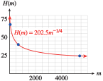

Subsection 4.6 Power Functions
The basic functions \(y = \sqrt{x}\) and \(y = \sqrt[3]{x}\) are power functions of the form \(f (x) = x^{1/n}\text{,}\) and the graphs of all such functions have shapes similar to those two, depending on whether the index of the root is even or odd.
Figure (a) shows the graphs of
Figure (b) shows the graphs of
We cannot take an even root of a negative number. (See Subsection 4.8 "A Note on Roots of Negative Numbers" at the end of this section.) Hence, if \(n\) is even, the domain of \(f (x) = x^{1/n}\) is restricted to nonnegative real numbers, but if \(n\) is odd, the domain of \(f (x) = x^{1/n}\) is the set of all real numbers.
We will also encounter power functions with negative exponents. For example, an animal's heart rate is related to its size or mass, with smaller animals generally having faster heart rates. The heart rates of mammals are given approximately by the power function
where \(m\) is the animal's mass and \(k\) is a constant.
Example 4.6.18.
A typical human male weighs about \(70\) kilograms and has a resting heart rate of \(70\) beats per minute.
- Find the constant of proportionality, \(k\text{,}\) and write a formula for \(H(m)\text{.}\)
-
Fill in the table with the heart rates of the mammals whose masses are given.
Animal Shrew Rabbit Cat Wolf Horse Polar bear Elephant Whale Mass (kg) \(0.004\) \(2\) \(4\) \(80\) \(300\) \(600\) \(5400\) \(70,000\) Heart rate \(\) \(\) \(\) \(\) \(\) \(\) \(\) \(\) - Sketch a graph of \(H\) for masses up to \(6000\) kilograms.
-
We substitute \(H = 70\) and \(m = 70\) into the equation; then solve for \(k\text{.}\)
\begin{equation*} \begin{aligned}[t] 70 \amp = k \cdot 70^{-1/4} \\ k \amp= \frac{70}{70^{-1/4}} = 70^{5/4} \approx 202.5 \\ \end{aligned} \end{equation*}Thus, \(H(m) = 202.5m^{-1/4}\text{.}\)
-
We evaluate the function \(H\) for each of the masses given in the table.
Animal Shrew Rabbit Cat Wolf Horse Polar bear Elephant Whale Mass (kg) \(0.004\) \(2\) \(4\) \(80\) \(300\) \(600\) \(5400\) \(70,000\) Heart rate \(805\) \(170\) \(143\) \(68\) \(49\) \(41\) \(24\) \(12\) -
We plot the points in the table to obtain the graph shown below.

Many properties relating to the growth of plants and animals can be described by power functions of their mass. The study of the relationship between the growth rates of different parts of an organism, or of organisms of similar type, is called allometry. An equation of the form
used to describe such a relationship is called an allometric equation.
Of course, power functions can be expressed using any of the notations we have discussed. For example, the function in Example 4.6.18 can be written as
Checkpoint 4.6.19.
-
Complete the table of values for the power function \(f (x) = x^{-1/2}\text{.}\)
\(x\) \(0.1\) \(0.25\) \(0.5\) \(1\) \(2\) \(4\) \(8\) \(10\) \(20\) \(200\) \(f(x)\) \(\) \(\) \(\) \(\) \(\) \(\) \(\) \(\) \(\) \(\) Sketch the graph of \(y = f (x)\text{.}\)
Write the formula for \(f (x)\) with a decimal exponent, and with radical notation.
\(x\) \(0.1\) \(0.25\) \(0.5\) \(1\) \(2\) \(4\) \(8\) \(10\) \(20\) \(200\) \(f(x)\) \(3.2\) \(2\) \(1.4\) \(1\) \(0.71\) \(0.5\) \(0.35\) \(0.32\) \(0.22\) \(0.1\) \(f (x) = x^{-0.5}\text{,}\) \(f(x)=\dfrac{1}{\sqrt{x}} \)